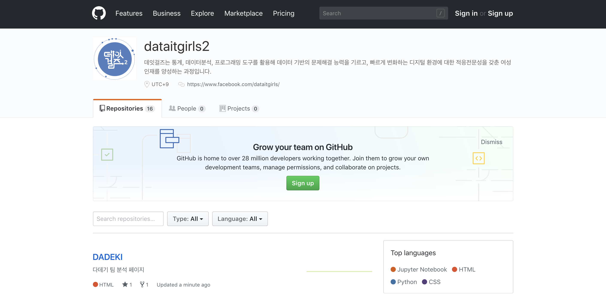

데잇걸즈 데이터 분석

슬랙 데이터
슬랙은 대표적인 협업 프로그램으로 Github, Google과 연동하여 사용할 수 있으며 Chatbot, Customizing 등의 다양한 기능을 지원합니다. 데잇걸즈 2기는 수평적이고 신속한 소통, 자유로운 의견 교환, 어쩌구 저쩌구를 위해 커뮤니티 메신저로 슬랙을 채택하였습니다. 슬랙에는 3개월간 밤낮없이 오고간 데잇걸즈 2기 구성원의 기록들이 가득합니다. 우리는 데잇걸즈 2기의 슬랙 데이터를 분석하고, 그 결과를 바탕으로 데잇걸즈 2기가 그동안 걸어온 길을 돌아보고 우리의 내일을 예측해 봅니다.
깃허브 데이터
깃허브(Github)는 개발자들의 필수 프로그램으로, Git을 사용한 분산 버전 관리와 협업을 효과적으로 돕는 웹 사이트 서비스입니다. 데잇걸즈 2기 구성원들은 Github을 사용하여 공부한 내용을 기록하고, 각자 매일 배운 내용을 깃허브 TWL Repository에 커밋하여 데이터 입문자들을 위한 튜토리얼 깃북을 만들었습니다. 또 10 Minutes to Pandas를 번역한 판다스 10분 완성을 웹으로 호스팅하여 오픈 소스 생태계에 기여하였습니다.
이처럼 데잇걸즈 깃허브에는 데잇걸즈 2기 구성원들의 피, 땀, 눈물이 고스란히 담겨 있습니다. 우리는 데잇걸즈 2기의 깃허브 데이터를 분석하여 구성원들이 1일 1커밋을 통해 얼마나 성장했는지 돌아보고, 서로에게 응원과 동기부여가 되었던 지난 시간들을 회고해 봅니다.
